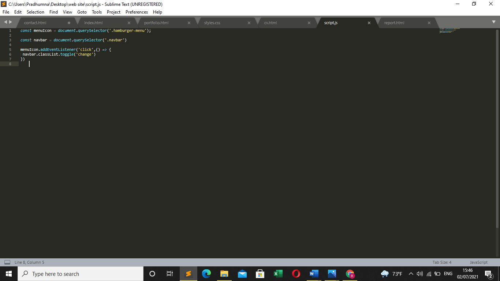

Site report
A reflective discussion on my module experience
Abstract:
This report introduces all the steps I took while I was creating this website and the errors with it. For this assignment since I was unfamiliar with the creation of website. I took a lot of time researching and watching youtube tutorials on the process of creating website and at the same time applying the lessons during the lectures in it. Most of the codes that I was unfamiliar with were referenced from you tube tutorials. I hope to reduce the errors and increase my skills after the evaluation of my assignment. The process of creating the website began with the homepage and the style page (styles.css) where all the pages and subpages would be styled later on.
This report consists of my experience of learning basic, web designing, coding, design and debugging process. The purpose of this assignment was to create a responsive website that has the ability to run on both desktop and smartphones. By understanding, this action would allow us to create a website which would reach maximum number of people. I started my assignment by first researching how to begin creating the website through tutorial videos, searching through google etc. It took me a long time creating the website since I didn’t know where to start but once I figured how I wanted my website to be, it started by itself. It was a long step by step process. Sometimes I would write a code that I thought would work but in the end the result would turn out vastly different and I had to write the code from the beginning.
Below are the steps and records of how I started my website till the end:
1. Creating the home page and hamburger menu:
While creating the homepage the basic html code was first written and was linked to the stylesheet or the style page so that the homepage could be styled later on. The background image was then selected from google at the website pixabay.com where free images were available. Since the home page should be accessible from other webpages and vice versa the hamburger menu was then created. To create the hamburger menu first div class container and wrapper were added then below the nav class navbar was added inside where the menu would be. Division class hamburger menu had three div class lines and the nav list contained the names of the subpages. At last, the div class welcome-text was added where a paragraph of introduction for the home page was written and a contact me button was added below the welcome-text which would be linked to the contact subpage. Creating the animated hamburger was the most cumbersome process of the whole website. Java script (script.js) was used to create the retractable effect of change after clicking the animated hamburger icon which was created by styling change and div class line (1, 2 and 3). The font for the website was added from google fonts. The styling was done in styles.css where the image was added to the body, the width and the height of the navbar was selected along with the transition and position, the navbar was made to be a little more transparent so the opacity to 0.9 and the background of the navbar to be black. To make the webpage responsive @media(max-width=800px) was used where the container, welcome-text and nav-bar was styled accordingly at styles.css. The index page was then validated at w3c markup validation service .
Index.html:
Style.css:
Javascript: Java script (script.js) was used for the hamburger menu and navbar.
Validation: After the styling of index.html it was then validated at w3c markup validation service.
2. Creating subpages:
After the home page subsiquent sunpages were created:
a. CV
For cv a separate box was created and contact information first-name and last-name was added to the div header-left and at the same time email, phone and address was added to the div header-right. Division class objective was created and an icon was added and a paragraph of words were written below the div class objective. For the div class education a table was created to arrange the academic info on the institute and the grades. Technical skills were listed on the div class skills and an icon was added and the same process was followed in the div class personal information and declaration Then the cv was then styled at styles.css and validated at w3c markup validation service.
cv.html:

styles.css:

Validation:

b. Portfolio
For portfolio div class image grid was made where placeholders were placed inside the webpage using grid and the placeholders at a size of 320×240 was downloaded from google from placeholder generator. It was then added to div class “image-grid” in the html page. Then it was made responsive at style.css so that it can function in both mobile and laptop and styled at styles.css and then the debugging process was done by inspecting the webpage. After that the webpage was validated at w3c markup validation service.
Portfolio.html:
Styles.css:
Validation:
c. Contact page
For contact.html a section contact and div class content was created inside div content the heading “contact us” was written. Division class container and contact info was made and icons were added inside the div class box-x from font-awesome. The contact info was added inside the div class text Then to create the contact form heading send messages was written and the questions like full name, email and type your message was written inside the div class input box. it was styled at style.css and validated at w3c markup validation service.
Contact.html:
Styles.css

Validation
3. Problems and changes
• The background of the website was changed
To this image of a landscape from pixabay.com .
• There were many problems while creating webpages like the contact page not working
But the problem was fixed after the verification and debugging process.
• The colour of the box in the CV from grey to #173e43
The box containing div class personal information and declaration was fixed and also the height of the box was changed to be shorter.
• There was a lot of problems while making the portfolio responsive

But the problem was fixed after the verification and debugging process .
4. Conclusion
This report is a reflection on the journey and my learning process while I was creating the website. Since this was my first time making a website, it was a long trial and error process for me. Summing up the things I learned from my lectures and putting it in the website was a huge boost to my confidence in while and in this process there were a lot of things that I hoped I could do but at the end I had to give up due to my limited knowledge and skill set. There are still a lot of errors in this assignment that I hope I can prevent and reduce in the future.
5. References
Yashwanth B. (2020) Responsive contact us design by using only html and CSS. 2 august . Available at:
https://www.youtube.com/watch?v=BOBWPJM9V-c&t=17s&ab_channel=YashwanthB
(Accessed: 4 June 2021).
Packet code. (2019) how to create a resume. 5 October. Available at:
https://www.youtube.com/watch?v=DbcoQmEjaxg&t=1226s&ab_channel=packetcode
(Accessed: 6 June 2021).
nature/landscape (n.d.) [online]. Available at:
https://pixabay.com/photos/landscape-fantasy-moon-camels-sky-5009868/
(Accessed: 1 July 2021).